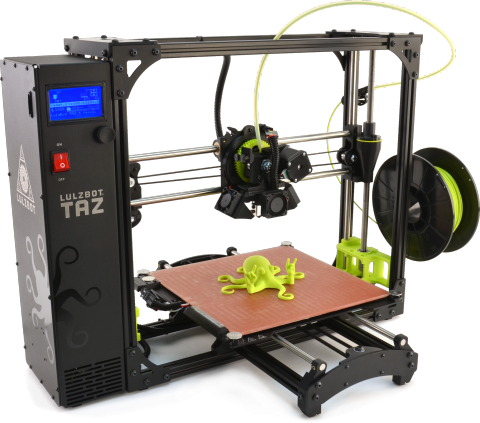

CONSCIOUS CODE
Conscious coding wokeshops are free of charge and use free and open-source software.
3D-Printing Workshop Proposal
Blackspace is developing a 3D-printing conscious code workshop for high school students exploring identity and African American history + culture in the United States. This proposed workshop consists of multiple parts, both cultural and technical. We want these experiences to remain free of charge for all students. The following proposal outlines workshop objectives.
Workshop Supporting Partners
Blackspace
HacDC: The Capital's Hackerspace
Homeschoolers of Color
Interested in becoming a partner?
Workshop Implementing Team
Luke Demarest is a visual artist and computer programmer. He has an active artist practice and is Blackspace's 3D-printing program manager. He has worked as a web engineer for Rosetta Stone, as an artist-in-residence at the American Underground - a Google for Entrepreneurs Tech Hub - and as principal studio assistant for the Mountain Lake Workshop - a collaborative workshop nurtured by the belief that genuine art and culture can develop from any situation in which there are shared experiences. Luke is a member of the HacDC 3D-printing group and is an active supporter of free culture and free software.
Pierce Freelon is a musician, professor and social entrepreneur. He is the creator of Blackspace - a digital makerspace based in Durham, North Carolina - and the co-founder of the Emmy-award winning PBS web-series Beat Making Lab. He has taught in the Department of African, African American and Diaspora Studies at UNC Chapel Hill and is the front-man of the jazz/hip hop quartet The Beast.
Julia Longtin is a hardware and software hacker with 4.5 years of experience as a hackerspace treasurer and 1 year as president of HacDC: the Capital Hackerspace. Julia has 5000+ hours teaching hacking skills to the general public and is a Free Software/Hardware Zealot.
I'm a 'born hacker' who's worked my way up from a farm in Arkansas to President of a HackerSpace in DC. I've written nothing but Free Software for 15 years, relying on it for my infrastructure for the last 20. I'm maintainer of many tricky software projects, like a haskell-based 3D modeling system, an image recognition system, and many Linux Kernel patch sets. I invented using microwaves in the aluminium casting process. I teach a strong set of skills surrounding 3D-printing, laser cutting, and all things CNC. I drink deeply of technology, spending most of my time writing code or building things. I lament the fact that most don't get the chance to develop similar skills, so am driven to teach the subjects in the best ways I can find. I currently keep a load of 10+ hours a week teaching the public about 3D-Printing and Microcontrollers. As a board member, I have brought two spaces from the red into the black, by building communities and strengthening the people in them... and a lot of hard work!
Workshop + Exhibition Locations
Blackspace
212 W Main St
Durham, NC 27701
United State of America
HacDC
1525 Newton St NW
Washington, DC 20010
United States of America
The Carrack Modern Art
947 E Main St
Durham, NC 27701
United States of America
National Museum of African American History & Culture
1400 Constitution Ave NW
Washington, DC 20560
United States of America
Workshop Aims and Objectives
We aim to develop a dialog about what it means to be a human and a citizen in the changing landscape of our city, state, and country. The result will be young people, also known as afronauts, that have a deeper understanding of their individuality, their commonality and their environment. The workshop will culminate in an exhibition of 3D printed sculptures by students. This will ultimately shape a cultural and technical 3d-printing curriculum and modular 3d-printing studio setup that can be replicated for other groups and locations in the future.
Workshop Methods Overview
From a technical standpoint, this workshop will be an accessible introduction to 3D-printing and computer programming, serving as a gateway to computer literacy. We've created a custom blackspace interface for openjscad.org, an open-source modeling framework which take's a programmers approach to developing 3D models in JavaScript. This teaches the syntax of JavaScript, the programming language of the web, introducing key programming and internet concepts that students can build upon, not just in the 3D-printing context. The Blackspace webapp is pictured below.
For the pilot workshop we plan to work with ~10 high school students from Homeschoolers of Color starting in Feburary 2017 and ending in June 2017.
Listed below are the projected workshop components:
-
Weekly 3d-printing classes at Blackspace with rotating black history month topics. These classes will coinside with HacDC's 3D-printing class in Washington, D.C.. The two remote classes will be teleconferenced together. We will start by learning how to create 2D CSG shapes, 3D CSG shapes, and their correlating transformation functions.
-
Class architectural walking tour of Durham. As an exercise, students will see the city, draw their favorite buildings, and design and print a 3D model based off their favorite structures.
-
A proposed one night show at the Carrack Modern Art Gallery in Durham, NC. This is to share the workshop learning process before the class field trip to our nation's capital.
-
Weekend field trip to Washington, D.C. to visit the National Museum of African American History & Culture. We will also have an in person 3D hacking session with the workshop partners at the HacDC hackerspace in Columbia Heights.
-
Class cultural walking tour of Durham. As an exercise, students will see the city, draw the cultural site that resonantes with them in the context of the Washington, D.C. field trip, and design and print a 3D model based off that experience.
-
Class Art exhibition of 3D printed sculptures as a part of the Carolina Theatre celebration of Philip Freelon.
-
Proposed secondary art exhibitions as a part of Durham's Art of Cool Festival and Moogfest festival.
Workshop Contributions, Limitations and Looking Forward

Blackspace needs funding for purchasing, building, and maintaining 3D-printing hardware and software, developing a teaching curriculum, and providing travel expenses for students.
We would like to purchase 3 3D printers: 1 lulzbot taz (1 x $2,500) and 2 lulzbot minis (2 x $1,250).
Pictured above is a lulzbot taz, which has a large printing bed and has excellent qualities for experimentation and hacking.
Note that we perfer lulzbot printers because they make free and open-source hardware and software.
However, if you are associated with another company or are interested in donating alternative hardware, we welcome you with open arms.
Computer donations are also welcome. Washington, D.C. travel expenses for each student include transportation, museum tickets, food, materials, and lodging. (~10 x $500).
For workshop development and labor: $7000.
Workshop total is ~$17,000.
At the end of this pilot, we aim to have a streamlined, low-cost 3D-printing workshop framework that can be replicated in other settings with other students and teachers.